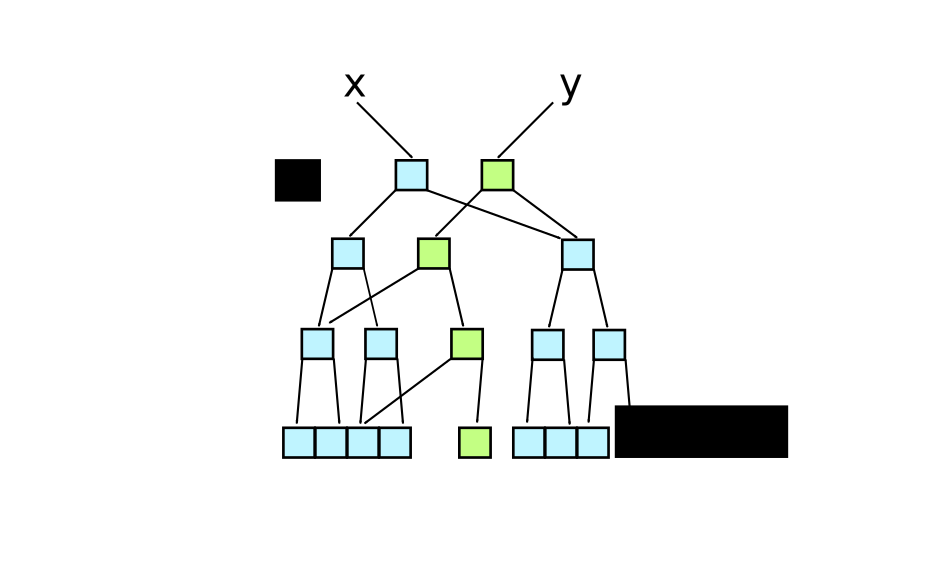

Clojure
Bill Carlson / @coacoas
About Me
- Java Developer @ BridgeGate
- Scala Enthusiast
Well, kind of...
Marathon RunnerINJURED
About You
Who has ever heard of Clojure?
Who has ever played with Clojure?
Does anyone actually work with Clojure at their job?
About Clojure
Clojure is...
- Dynamically Typed
- Strongly Typed
- A Lisp Dialect
- Functional
- Promoting Immutability
- ... and Concurrency
- Targeting the JVM
*
( )
Data
Atomic Data Types
- Integers - 123456789012345678901234567890
- Doubles - 1.234567
- Ratios - 22/7
- Strings - "Bill"
- Characters - \b \i \l
- Symbols - bill lana
- Keywords - :bill :lana
- Boolean - true false
- Null - nil
- Regex - #"a*b"
Data Structures
- Lists - singly linked, prepend
- (1 2 3 4 5), (list \a \b \c)
- Vectors - indexed sequence, append
- [1 2 3 4 5], [\a "test" false]
- Maps - associated data strcutures
- {:a 1, :b 2}, {"test1" "result1" "test2" "result2"}
- Sets - Unique elements
- #{:a :b :c}
- Arbitrary nesting
- [{:name '("Bill" "Carlson") :employer #{:BridgeGate}}]
Hello, World
(println "Hello, World")Look familiar?
Clojure Syntax
- Syntax is expressed as data structures
- Execution is an evaluation of these data structures
- Homoiconicity
Defining a value
|
|
|
Defining a function
(def double
(fn
"Doubles the value passed in"
[x]
(* x 2)))
(defn double
"Doubles the value passed in"
[x]
(* x 2))
Eliminate Ambiguity
16 + 4 * 7 - 9 / 3
(+ 16 (- (* 4 7) (/ 9 3))
(+ 16 (- 28 3))
(+ 16 25)
41
(16 + (4 * 7) - (9 / 3))
Macros
Here be demons!
- Allow you to modify the program at runtime
- Allow you to build contstructs that look like the language
- Are extremely powerful
- Are very easy to abuse
- Are very easy to get wrong
Functional Programming
What is Functional Programming?
Programming with functions
What is a function?
A function defines a transformation from A => B where every possible value of A translates to exactly one value of B
... and nothing else
Well, that's pure functional programming
Clojure does not enforce purity
...but it's still a good idea
Why Functional Programming?
- Reasoning
- Parallelism
Immutability
- Clojure data structures are immutable (final)
- Cannot change a list/vector/map/set
(def v [1 2 3]) (conj v 4) ; [1 2 3 4] (conj v 5) ; [1 2 3 5]- Too much copying?
Persistent Data Structures
Share data between data strctures
Lists
(def x (list 10 20 30))
(def y (cons 1 (cons 2 x)))
Lists
To get the first element of a list:
|
To get the rest of the list:
|
To put an element at the beginning of a list:
|
| All these operations take constant time! |
Vectors
(def x [0 1 2 3 4 5 6 7])Vectors
(def y (assoc x 3 9)) ; [0 1 2 9 4 5 6 7]
This behavior is O(log2 n)
Vectors
What happens if we increase the branching factor?
Branching factor of a Clojure vector is 32
Append or "modify" is now O(log32 n)
(log32 1,000,000,000) ≅ 5.979
Small enough, it doesn't matter -- effectively constant time
Vectors
To get the first element of a vector:
|
To get the rest of the vector:
|
To put an element at the end of a vector:
|
To "alter" an element in a vector:
|
To look up an element in a vector:
|
| All these operations take effective constant time! |
Maps
To add an element to a map:
|
To add an element to a map (better):
|
To remove an element from a map:
|
To look up an element in a map (better):
|
To look up an element in a map where the key is a keyword:
|
Sets
To add an element to a set:
|
To remove an element from a set:
|
To look up an element in a set:
|
To look up an element in a map:
|
To look up an element in a map where the key is a keyword:
|
Common operations
- filter
- Given a function, creates a new sequence containing all elements where the function result evaluates as true
(filter odd? [1 2 3 4]) ;= (1 3)
- Given a function, creates a new sequence containing all elements where the function result evaluates as true
- Given a function, creates a new sequence where each element has been tranformed by the function.
(map (fn [x] (+ x x)) [1 2 3 4]) ;= (2 4 6 8)
Common operations
- mapcat
- Given a function that generates a sequence, creates a new sequence containing all the elements of the given sequence
(mapcat range [1 2 3 4]) ;= (0 0 1 0 1 2 0 1 2 3)
- Given a function that generates a sequence, creates a new sequence containing all the elements of the given sequence
- Analogous to flatMap in Scala
- Reduces a sequence to a single value, by applying the function to each element in sequence
(reduce + [1 2 3 4]) ;= 10
Concurrency
Identity vs State
- Me now, vs me 20 years ago
- Operations are on current state, not identity
Synchronous vs Asynchronous
- Synchronous: Processing blocks until updates are complete
- Asynchronous: Processing continues -- may not know when the update is complete
Coordinated vs Uncoordinated
- Coordinated: Actors share a context and must be properly behaved
- Uncoordinated: Actors do not share context
Atoms
- Synchronous and Uncoordinated
- Compare-And-Set
(def serial (atom 10000))
(swap! serial inc)
@serial ;=10001
Refs
- Atoms are great for one piece of information
- Sometimes, have to make sure two things happen atomically
- Synchronous and Coordinated
- Software Transactional Memory (STM)
Refs
- All actions happen in the context of a transaction (dosync)
- At the end of the transaction, all refs are compared with current memory
- If anything has changed, the transaction is executed again
- Use pure functions only!
Refs
Because it wouldn't be a concurrency discussion without bank records
(def account1 (ref 100))
(def account2 (ref 0))
(defn transfer [amount from to]
(dosync
(alter from - amount)
(alter to + amount)))
(tranfer 50 account1 account2)
@account1 ;= 50
(deref account2) ;= 50
Agents
- Asynchronous and Uncoordinated
- Based on actor model
- Instead of sending message, send behavior
(def serial (agent 10000)) (send serial inc) @serial ;=10001 - Executed on a thread pool
- Processed one at a time
- Can use
sendfor non-blocking code, but usesend-offfor blocking code
Agents
(ns parallel-fetch
(:import (java.io InputStream InputStreamReader BufferedReader)
(java.net URL HttpURLConnection)))
(defn get-url [url]
(let [conn (.openConnection (URL. url))]
(.setRequestMethod conn "GET")
(.connect conn)
(with-open [stream (BufferedReader.
(InputStreamReader. (.getInputStream conn)))]
(.toString (reduce #(.append %1 %2)
(StringBuffer.) (line-seq stream))))))
(defn get-urls [urls]
(let [agents (doall (map #(agent %) urls))]
(doseq [agent agents] (send-off agent get-url))
(apply await-for 5000 agents)
(doall (map #(deref %) agents))))
Watches
- Can be used for all ref types
- Function that takes 4 arguments [key identity old new]
- Called whenever the state is updated
(add-watch refval :echo
(fn [key id old new] (println key old "=>" new)))Validators
- Ensures proper state
- Updated value of the ref is sent to the function
- If the function returns a falsey value, throws an IllegalStateException
(set-validator! refval pos?)And so much more!
- Futures
- Promises
- Delays
- Vars
- java.util.concurrent
- Threads
Java Interop
Clojure *is* Java
- Strings are java.lang.String
- nil is Java's null
- Sequences implement java.util.List
- Clojure is just a jar
Interfacing with Java
- Instantiate a new object
new ClassName(arg);(ClassName. arg) - Invoke a method
obj.method(arg1, arg2);(.method obj arg1 arg2) - Invoke a static method
ClassName.staticMethod();(ClassName/staticMethod)
Interfacing with Java
- Accessing a static field
ClassName.FIELDClassName/FIELD - Accessing an instance field
object.fieldName(.fieldName object) - Refer to a class
ClassName.classClassName
Exceptions
Very similar to Java
try {
// code
} catch (Exception e) {
// handle
} finally {
// close resources
}
(try
; code
(catch Exception e
; handle
(finally
; close resources
)))
Evaluates to the last value in the try or catch
Running Clojure Programs
REPL
- Read-Eval-Print Loop
- Command line
Build Tools
- Maven: clojure-maven-plugin
- Leiningen!
- Download the script
- Run
lein new - Update project.clj
- Happy coding!
Leiningen: Sample project.clj
(defproject jaxjug-clojure-presentation "0.1.0-SNAPSHOT"
:description "FIXME: write description"
:url "http://example.com/FIXME"
:main jaxjug-clojure-presentation.fizzbuzz
:license {:name "Eclipse Public License"
:url "http://www.eclipse.org/legal/epl-v10.html"}
:plugins [[no-man-is-an-island/lein-eclipse "2.0.0"]]
:dependencies [[org.clojure/clojure "1.4.0"]
[joda-time/joda-time "2.2"]])
IDE
- Eclipse: CounterClockwise
- Idea: La Clojure
- NetBeans: Enclojure
- Emacs: Swank
- Sublime Text 2: SublimeREPL
- Light Table
Demo
Links
Thank you
See GitHub for this presentation